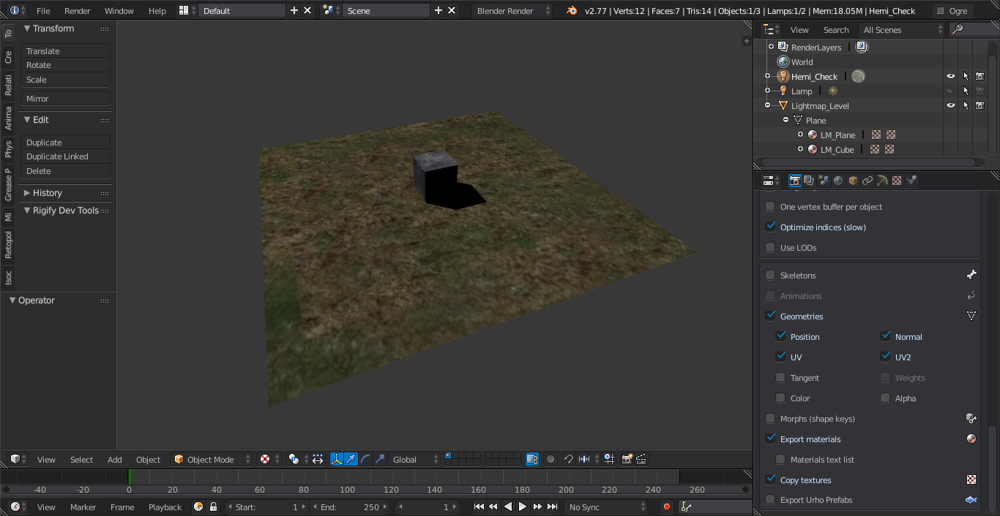
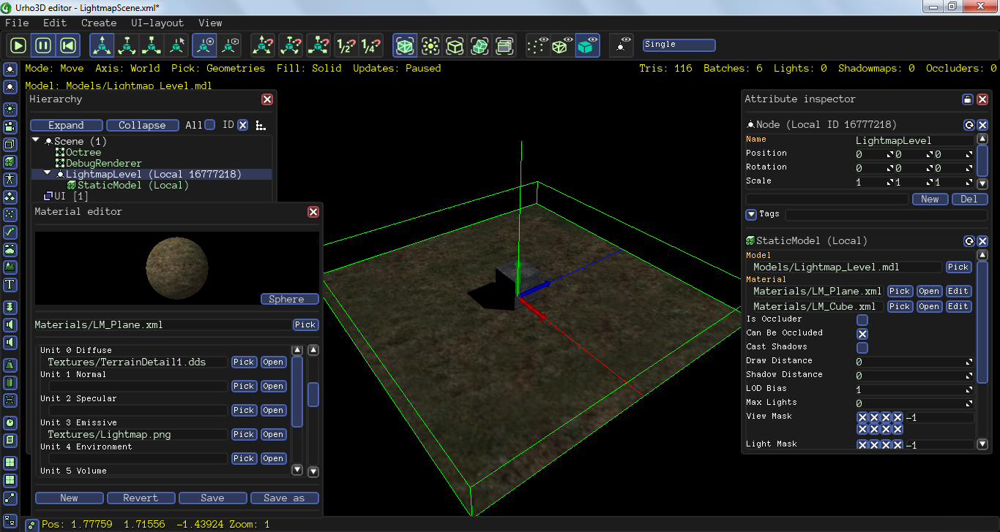

This is a simple and basic lightmapped object and blender file that I gathered up quickly for export using reattiva’s exporter. I have used 2 materials and textures from the Data/Textures folder and generated a single lightmap. You can just ignore the 2 packed images as Blender does not export to DDS and will duplicate the example diffuse textures.


Depending on your needs, this could serve as a starter reference and hope it will come in handy for those who are familiar with Blender lightmapping and at the same time would like to know how to do a basic lightmap export using the addon exporter.
Download Link:
https://goo.gl/B3hMBw
cheers.